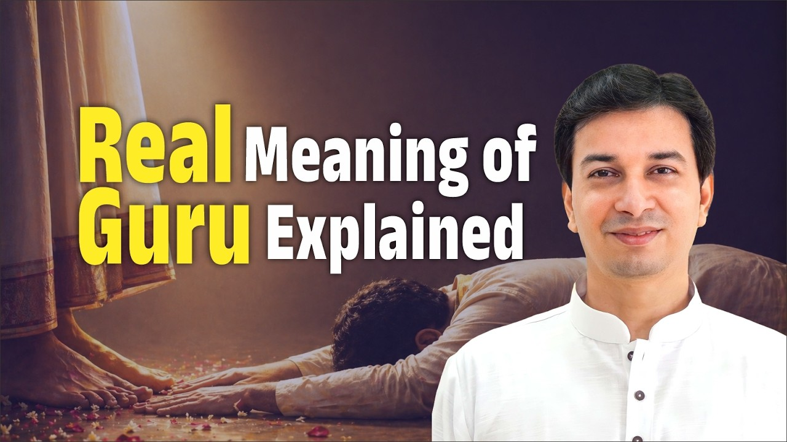

हर साल हम गुरु पूर्णिमा मनाते हैं। पर क्या कभी रुककर सोचा है कि यह दिन पूर्णिमा को ही क्यों आता है? और जिन वेदव्यास जी को हम इस दिन याद करते हैं, उनका असली नाम क्या था?
आइए, इस पर्व के पीछे छिपे अर्थ को समझें।
यह पर्व अमावस्या को क्यों नहीं?
पितरों के लिए हम जो कुछ भी करते हैं, वह अमावस्या को किया जाता है। तो फिर गुरु पूर्णिमा पूर्णिमा को ही क्यों?
यह एक बहुत मूल प्रश्न है। और इसका उत्तर सूर्य और चंद्रमा के प्रतीकों में छिपा है।
सूर्य आत्मा है, चंद्र मन है
सूर्य आत्म तत्व का प्रतीक है। आत्मा, यानी "मैं", स्वयं मैं। मैं यह शरीर नहीं हूं।
चंद्रमा मन का प्रतीक है, जीवात्मा (individual soul) का प्रतीक।
अब सोचिए, जब उस आत्मा, उस परमेश्वर का पूरा प्रकाश चंद्रमा पर प्रतिबिंबित होता है, तो वह पूर्णिमा है। यह किसके मन की अवस्था हो सकती है? आचार्य जी बताते हैं कि यह किसी गुरु की स्थिति है।
गुरु वह है जिसके मन पर आत्मा का प्रकाश पूरा का पूरा झलकता है। इसीलिए गुरु का पर्व पूर्णिमा को ही होता है।
क्या आपका मन आज आत्मा के प्रकाश को कितना प्रतिबिंबित करता है, आधा, थोड़ा, या बिल्कुल नहीं?
व्यास कोई नाम नहीं था
इसी दिन को व्यास पूर्णिमा भी कहा जाता है। ज़्यादातर लोग सोचते हैं कि व्यास उनका नाम था। पर ऐसा नहीं है।
उनका नाम था कृष्ण द्वैपायन। "वेदव्यास" तो उनकी उपाधि है।
वेद का अर्थ है जानना, जानने की प्रक्रिया। और व्यास का अर्थ है टुकड़े करना, विभाजन करना।
ज्ञान को टुकड़ों में क्यों बांटा गया?
वह समय ऐसा था जब तक सब कुछ कंठस्थ न हो जाए, तब तक शिक्षा पूरी नहीं मानी जाती थी। अब सोचिए, क्या कोई इतना सारा ज्ञान विस्तार से याद कर सकता है?
इसलिए वेद, पुराण, शास्त्र, उपनिषद, जितना भी ज्ञान था, उसे छोटी-छोटी शाखाओं में बांट दिया गया। जिसने वेदों का यह विभाजन किया, वह व्यास कहलाया। आचार्य जी समझाते हैं कि व्यास एक पद है।
यानी व्यास एक पद है। और जिन कृष्ण द्वैपायन के लिए हम गुरु पूर्णिमा मनाते हैं, वे अट्ठाईसवें व्यास हैं।
सत्रह पुराण, फिर भी बेचैनी
वेदव्यास जी ने पूरे भारत का भ्रमण किया। अलग-अलग संस्कृतियां, पद्धतियां, और भक्ति, ज्ञान व कर्म के अलग-अलग मार्ग समझे। फिर उन्होंने सत्रह पुराण रचे।
उनमें बहुत सारा तत्व ज्ञान (essential spiritual knowledge) था। फिर भी उन्हें नींद नहीं आ रही थी। वे प्रसन्न नहीं थे।
क्या आपके साथ भी ऐसा होता है कि बहुत कुछ जानकर भी भीतर कुछ अधूरा लगता है?
भागवत पुराण: जहां यात्रा पूरी हुई
उनका कार्य तब पूरा हुआ जब उन्होंने अठारहवां पुराण लिखा, भागवत पुराण। इसमें मूल रूप से भक्ति (devotion) की ही बात है।
उनका संदेश था कि भक्ति के बिना ज्ञान का कोई अर्थ नहीं, और ज्ञानी भक्त बनना आवश्यक है।
और वही ज्ञानी भक्त हमें भी बनना है।
मुख्य बातें
- गुरु पूर्णिमा पूर्णिमा को इसलिए है क्योंकि सूर्य (आत्मा) का पूरा प्रकाश चंद्र (मन) पर पड़ना गुरु की अवस्था का प्रतीक है।
- पितरों के कर्म अमावस्या को होते हैं, गुरु का पर्व पूर्णिमा को।
- वेदव्यास जी का असली नाम कृष्ण द्वैपायन था। व्यास एक पद है, जिसका अर्थ है विभाजन करने वाला।
- कृष्ण द्वैपायन अट्ठाईसवें व्यास हैं।
- सत्रह पुराणों के ज्ञान के बाद भी संतोष नहीं मिला; अठारहवें, भागवत पुराण की भक्ति से कार्य पूर्ण हुआ।
- ज्ञान और भक्ति साथ चलें: ज्ञानी भक्त बनना ही लक्ष्य है।

आगे पढ़ें

क्या हमने कभी सच में प्रेम किया है? या जिसे हम प्रेम कहते हैं, वह कुछ और है? आचार्य उपेंद्र जी इस छोटे से प्रवचन में गुरु शिष्य का प्रेम समझाते हुए…

गुरु सान्निध्य शिविर के एक साधक अपना अनुभव साझा करते हैं। कुछ दिन गुरुदेव के साथ रहना, और गुरुदेव का उनके साथ रहना, उनके सोचने का पूरा ढंग बदल गया।

गीता का एक श्लोक है जो पहली बार सुनने पर चौंका देता है। श्रीकृष्ण अर्जुन से कहते हैं, सब धर्म छोड़कर मेरी शरण में आ जा।